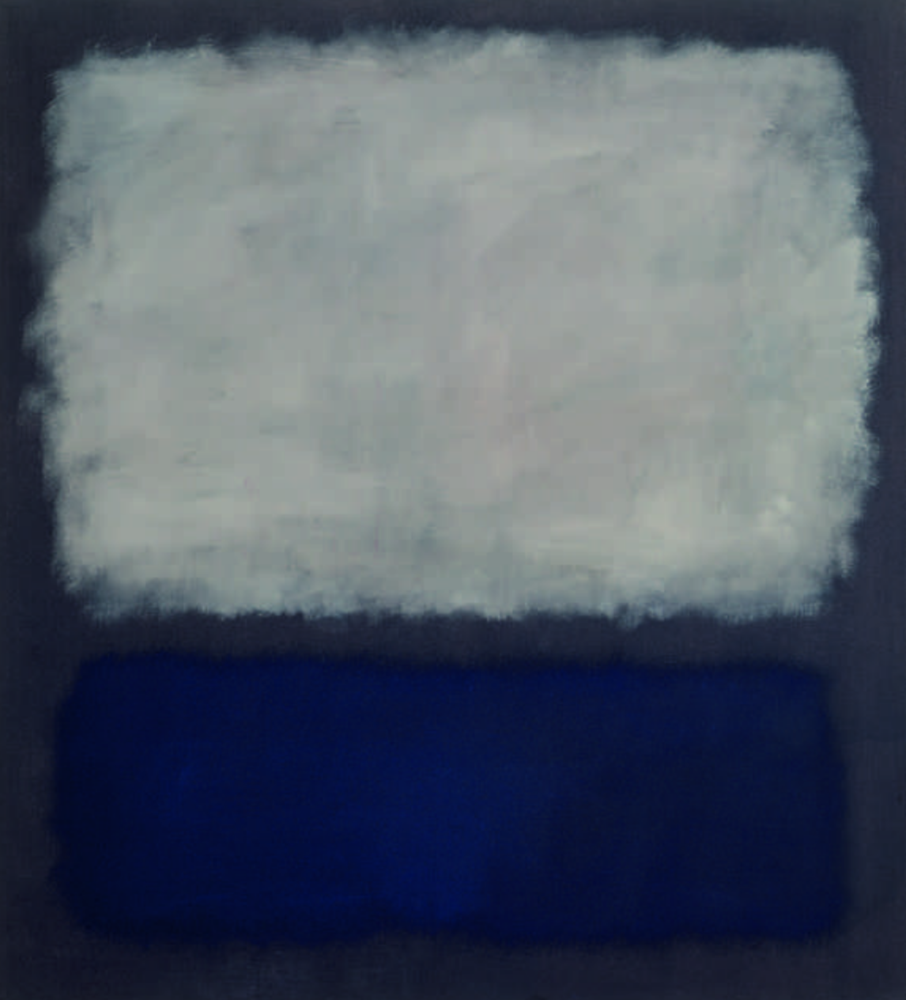

Biography
Mark Rothko is a Jewish painter from Lithuania. He was very popular during the abstract expressionist era In USA. He is one of my favorite abstract expressionist artists. I find a strange peace in his artworks. He picked correct colors for correct moods and his paintings have huge impact on people. One of my favorite painting is Blue & Gray.
Artist: Mark Rothko
Artwork: Orange and Red
Created: 1956
Style: Abstract Expressionism
Silence is so accurate..
-- Mark Rothko